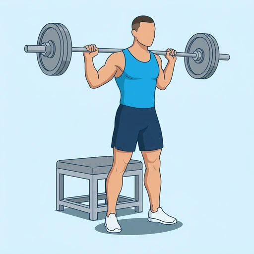

Barbell Box Squat
A back squat with a barbell in which you sit back onto a box or bench at the bottom, pause for a moment and stand up again. The box fixes the depth and teaches you to sit back into the hips, and the brief pause removes the rebound out of the bottom.
Upper legs · Barbell · Intermediate


Muscles worked by the Barbell Box Squat
Primary
Secondary
Also called: glute, glutes, gluteus maximus, buttocks, butt, quad.
Equipment
Also called: bar, olympic barbell, straight bar, olympic bar, power bar.
How to do the Barbell Box Squat
- Set a box or bench behind you at a height where your thighs end up about parallel to the floor when you sit on it.
- Take the barbell on your upper back, step back and stand with your feet a little wider than shoulder-width.
- Brace your trunk and push your hips back, then lower yourself under control toward the box.
- Sit onto the box without dropping onto it, keeping your chest up and your shins close to vertical.
- Pause briefly with your muscles still tight, without relaxing your back.
- Drive through your whole foot to stand up, and repeat for the planned repetitions.
Form tips
- Sit back rather than down; the box should be touched with your hips, not rested on with your weight.
- Keep the torso tight in the pause; relaxing on the box is where most back injuries happen.
- Use a box that cannot slide, and lower it as you progress until you can squat to full depth.
At a glance
| Body part | Upper legs |
|---|---|
| Category | Strength |
| Force type | Push |
| Mechanic | Compound |
| Difficulty | Intermediate |
| Equipment | Barbell |
| Goals | Strength, Power |
| Tags | Leg day, Powerlifting, Requires bench |
| MET | 6.0 (metabolic equivalent, for calorie estimates) |
| Unilateral | No |
| Bodyweight | No |
| Dataset id | barbell-box-squat |
Barbell Box Squat in German & Spanish
| German | Langhantel Box Squat |
|---|---|
| Spanish | Sentadilla en Caja con Barra |
Descriptions, instructions and tips ship in all three languages in the JSON.
Related exercises
Exercise data (JSON)
The record below is exactly what exercises.json ships for this exercise — names, descriptions, instructions and tips in English, German and Spanish.
{
"id": "barbell-box-squat",
"name_en": "Barbell Box Squat",
"name_de": "Langhantel Box Squat",
"name_es": "Sentadilla en Caja con Barra",
"description_en": "A back squat with a barbell in which you sit back onto a box or bench at the bottom, pause for a moment and stand up again. The box fixes the depth and teaches you to sit back into the hips, and the brief pause removes the rebound out of the bottom.",
"description_de": "Eine Kniebeuge mit der Langhantel im Nacken, bei der du dich unten auf eine Box oder Bank zurücksetzt, kurz pausierst und wieder aufstehst. Die Box gibt die Tiefe vor und lehrt dich, dich in die Hüfte zurückzusetzen, und die kurze Pause nimmt den Schwung aus dem tiefsten Punkt.",
"description_es": "Una sentadilla trasera con barra en la que te sientas hacia atrás sobre una caja o un banco en el punto más bajo, haces una breve pausa y te levantas de nuevo. La caja fija la profundidad y te enseña a sentarte hacia atrás con las caderas, y la breve pausa elimina el rebote en el fondo.",
"category": "strength",
"force_type": "push",
"mechanic": "compound",
"difficulty": "intermediate",
"equipment": "barbell",
"body_part": "upper_legs",
"primary_muscles": [
"gluteus_maximus",
"quadriceps"
],
"secondary_muscles": [
"adductors",
"erector_spinae",
"hamstrings"
],
"goals": [
"strength",
"power"
],
"tags": [
"leg_day",
"powerlifting",
"requires_bench"
],
"variation_group": "squat",
"is_unilateral": false,
"is_bodyweight": false,
"instructions_en": [
"Set a box or bench behind you at a height where your thighs end up about parallel to the floor when you sit on it.",
"Take the barbell on your upper back, step back and stand with your feet a little wider than shoulder-width.",
"Brace your trunk and push your hips back, then lower yourself under control toward the box.",
"Sit onto the box without dropping onto it, keeping your chest up and your shins close to vertical.",
"Pause briefly with your muscles still tight, without relaxing your back.",
"Drive through your whole foot to stand up, and repeat for the planned repetitions."
],
"instructions_de": [
"Stelle eine Box oder Bank hinter dir auf, in einer Höhe, bei der deine Oberschenkel beim Daraufsetzen etwa parallel zum Boden sind.",
"Nimm die Langhantel auf den oberen Rücken, tritt zurück und stelle dich mit den Füßen etwas breiter als schulterbreit hin.",
"Spanne den Rumpf an und schiebe die Hüfte nach hinten, dann senke dich kontrolliert zur Box ab.",
"Setze dich auf die Box, ohne dich darauffallen zu lassen, und halte dabei die Brust aufrecht und die Schienbeine nahezu senkrecht.",
"Pausiere kurz mit weiterhin angespannter Muskulatur, ohne den Rücken zu entspannen.",
"Drücke dich über den ganzen Fuß nach oben und wiederhole für die geplante Anzahl an Wiederholungen."
],
"instructions_es": [
"Coloca una caja o un banco detrás de ti a una altura en la que los muslos queden aproximadamente paralelos al suelo cuando te sientes en él.",
"Coloca la barra sobre la parte alta de la espalda, da un paso atrás y ponte de pie con los pies algo más separados que el ancho de los hombros.",
"Contrae el tronco y lleva las caderas hacia atrás; luego baja con control hacia la caja.",
"Siéntate sobre la caja sin dejarte caer sobre ella, manteniendo el pecho elevado y las espinillas cerca de la vertical.",
"Haz una breve pausa con los músculos aún tensos, sin relajar la espalda.",
"Empuja con todo el pie para ponerte de pie y repite el número de repeticiones previsto."
],
"tips_en": [
"Sit back rather than down; the box should be touched with your hips, not rested on with your weight.",
"Keep the torso tight in the pause; relaxing on the box is where most back injuries happen.",
"Use a box that cannot slide, and lower it as you progress until you can squat to full depth."
],
"tips_de": [
"Setze dich nach hinten statt nach unten; die Box sollte mit der Hüfte berührt werden, nicht mit deinem Gewicht belastet.",
"Halte den Oberkörper in der Pause angespannt; das Entspannen auf der Box ist der Moment, in dem die meisten Rückenverletzungen passieren.",
"Nutze eine Box, die nicht verrutschen kann, und senke sie mit zunehmendem Fortschritt ab, bis du bis in die volle Tiefe beugen kannst."
],
"tips_es": [
"Siéntate hacia atrás y no hacia abajo; la caja se toca con las caderas, no se descansa sobre ella con todo el peso.",
"Mantén el tronco firme durante la pausa; relajarse sobre la caja es donde se producen la mayoría de las lesiones de espalda.",
"Usa una caja que no se deslice y bájala poco a poco a medida que progreses, hasta que puedas hacer la sentadilla a máxima profundidad."
],
"met": 6.0,
"images": {
"flat": {
"start": "images/flat/barbell-box-squat-start.webp",
"peak": "images/flat/barbell-box-squat-peak.webp"
}
}
}Fetch just this exercise
const { exercises } = await fetch(
"https://exercise-dataset.com/exercises.json"
).then(r => r.json());
const ex = exercises.find(e => e.id === "barbell-box-squat");Free for personal and commercial in-app use with attribution (“Exercise data by RepDB”) — see the license and ready-made attribution snippets. Redistributing the data as a dataset or API is not permitted.